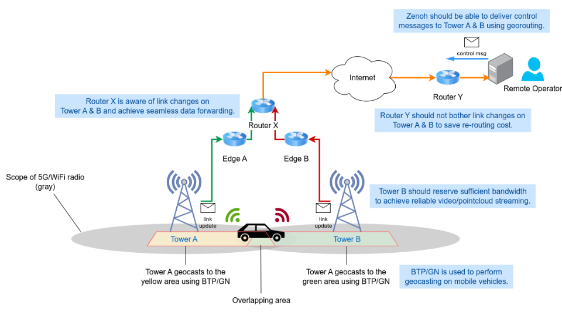

The Goal of The Project
This project focuses on the study of the construction of the vechile network based on named data networking semantics using emerging technologies. It idea is to locate data pieces using rich path expressions instead of addresses to support multi-vehicle monitoring and remote control. The targeted scenario is illustrated as follows.

The Technologies to Be Used
Time-sensitive Network and Linux QDISCs
Time-sensitive Network is a set of standards from IEEE 802.1 working group. It compiles basic constructs to build a network that with advanced congestion control and latency guarantees. The components include gating, priority selection policies and shapers. The impplementation is mostly done by Linux QDISCs in this project. QDISC is a part of Linux traffic control (TC) that allows users to define queing policies, filters and gating control on network devices.
Zenoh
Zenoh acts as a middleware that allow devices to communicate through publication/subscription manner, in which data is named by a path expression. It detangles the data content and the actual address of network peers. In this way, the data sources are discovered through a discovery mechanism and the connections are established afterwards. The application using Zenoh simply provide the names of data that is desired or is provided by the peer.
ETSI C-ITS nad Vanetza
ETSI C-ITS is a set of standards to describe the construction of intelligent transport system (ITS) in Europe. It defines the concepts, protocols and message formats used in the ITS system. In this project, the GeoNetworking protocol and Basic Transport Protocol (BTP) are used to achieve geographical data transport.
Challenges
The Integration of High-Level Zenoh Network and C-ITS Protocols
The integration work is necessary for userspace programs to access remote vehicle and cloud services through the standard C-ITS vehicle network. The challenge is to bridge the seemly differenct concept among the higher and lower layers. For example, the single-hop geocasting is defined in C-ITS GeoNetworking, but the Zenoh does not has the capability yet.
Data Transmission Reliability under Vehicle Mobility Assuptions
The current network architecture totally replies on 5G/LTE to process the mobility status of vehicles, which is not address by the Zenoh middleware. The applications above could experience temporary data outage due to the transfer of base stations and route changes. On the other hand, the current Zenoh routing algorithm does not process the case of high-fequent route change.